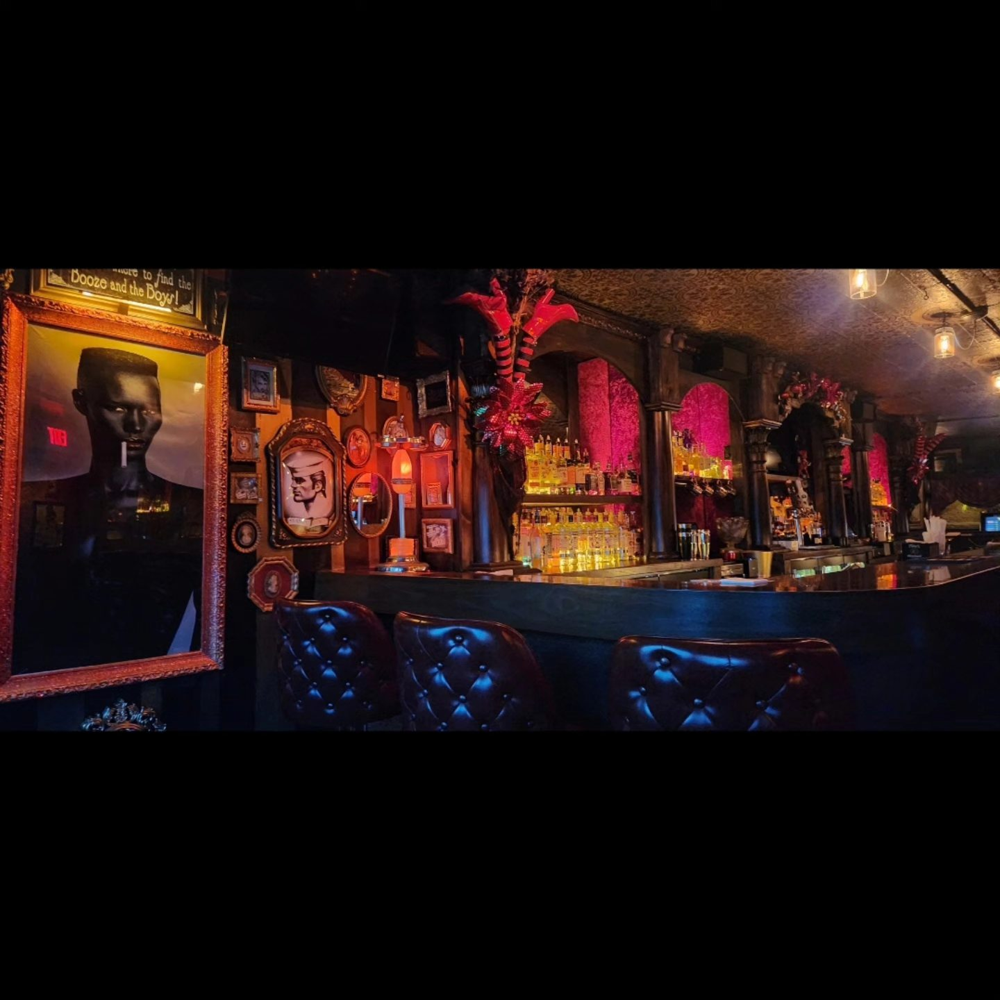

Shots & Specials

We keep it simple: solid drinks at fair prices, with rotating specials throughout the week. Whether you’re stopping in for a post-shift pour or kicking off the night, our bartenders know how to make it right without overcomplicating it.